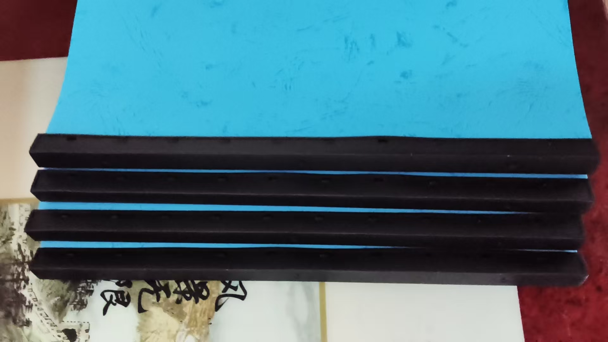

20261023脑屏是谁，是高维的我，或许是未来的我
符咒术法 原始对话记录昨天在老家，处理路面积水问题
按照脑屏指导，
所有方案，东西前邻居，都非常乐意
村委，镇上的人也解决了问题
村里出钱出人
皆大欢喜
[强]

上次脑屏指令我打印十二份资料
现在还有四份了
又有四个学生来学习
脑屏说，两次四个人，后边紧跟着还有一个
这资料就不够了
下午回潍坊，脑屏指令，再打印十份
开始是自己指令脑屏
现在反转了
一切脑屏说了算，脑屏是最正确的
验证准确百分百，现在放心使用
这脑屏是谁，是高维的我，或许是未来的我
再打印十份，就是说，五个学生之后，还有十个
我在修搬运术，修成之后，学费十w到十二w起步
将会把更多的想学不学，犹豫不决的拒之门外
[憨笑][憨笑][憨笑][憨笑]
我既然能移走别人的肿瘤，移走别人的结节
就一定能搬运
不过，不往表演法上使用
展示一次，能治疗几十个病人
再打印十份
昨天在老家。路面积水，得处理。
"按照脑屏指导。" 五个字，后面跟着一串结果：东西两边的前邻居都非常乐意；村委、镇上的人也来了，问题解决；村里出钱出人。最后四个字——"皆大欢喜"。
他没写水是怎么排的，也没写方案有几套。只说"所有方案"，都是按屏上的说法走的。
接着是资料。
"上次脑屏指令我打印十二份资料。" 现在还剩四份。八份已经给出去了。又有四个学生来学。他记下屏上的一句话："两次四个人，后边紧跟着还有一个。" 这样算下来，资料就不够了。
下午回潍坊，屏上又给一句：再打印十份。
他把这事往前推了一步。"开始是自己指令脑屏，现在反转了。" 从前是他问、屏答；现在"一切脑屏说了算，脑屏是最正确的"。理由只有一条，短得像标签——"验证准确百分百，现在放心使用。"
写着写着，他忽然问了一句。看着像顺手，其实是个大问题。
"这脑屏是谁，是高维的我，或许是未来的我。"
没有答案。两个"或许"，中间隔一个逗号。他也没有再往下追。
再打印十份，他算过。"就是说，五个学生之后，还有十个。" 数字对得上，他就照做。
后面的话，转到了另一件事。他在修搬运术。修成之后，学费"十w到十二w起步"，"将会把更多的想学不学，犹豫不决的拒之门外"。这句后面跟着四个憨笑的表情。
再往后是一段自问自答："我既然能移走别人的肿瘤，移走别人的结节，就一定能搬运。" 但他补了一句，不往表演法上使用。又写，"展示一次，能治疗几十个病人"。
一篇记录到这里就断了。前面是积水、资料、十份；后面是搬运、学费、病人。中间隔着一个没有答案的问题——那块屏后面坐着的，是谁。